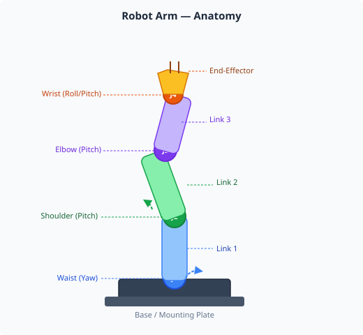
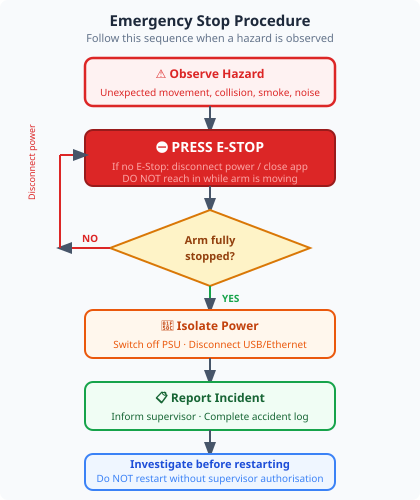
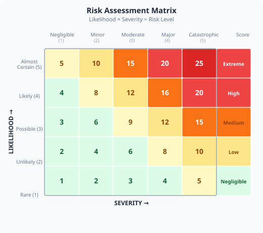

Duration: 2–3 hours · Prerequisites: None

A robot arm (also called a robotic manipulator) is a mechanical device that can move and position objects in three-dimensional space. Unlike a human arm, it follows instructions exactly — it will not stop if you get in the way.
Open the Robot Arm Control Application and navigate to the 3D Visualisation tab. You should see a rendered model of the arm.
Launch the Robot Arm application on your PC (or run it from the robot arm touchscreen).
Click the 3D Visualisation tab in the top navigation bar.
Use your mouse to rotate the view: left-click + drag to orbit, scroll wheel to zoom, right-click + drag to pan.
Count the number of visible joints (pivot points shown as cylinders or spheres) in the model. Write this number in the worksheet below.
Count the number of links (the rigid segments between joints). Write this too.
Look at the end effector at the tip of the arm. Note its shape and what it might be used for.
In the toolbar above the 3D view, enable the Movement Envelope overlay. You should see a sphere or volume appear around the arm showing the full space it can reach. This is the working envelope — never enter this volume with torque enabled.
Enable the End-Effector Trace overlay, then use the simulation mode sliders (bottom of the 3D view panel) to sweep a joint angle. Watch the trace plot the path the tool tip would follow. This overlay will be used in later modules to visualise planned paths.

Robot arms are designed to move with force and speed. They do not have built-in awareness of people nearby. A servo motor can generate significant torque — enough to cause a crush injury. Electrical hazards also exist around the power supply and wiring.
The working envelope is the full volume of space the arm can reach. Never enter the working envelope while the arm has torque enabled. Even if the arm appears to be stationary, a signal could cause it to move at any time.
Each joint is driven by a servo motor. Torque is the rotational force that moves the joint. When torque is disabled, the joints can be moved freely by hand and the arm is safe to approach. When torque is enabled, the arm is under active control and must be treated as live machinery.
Before ever moving the arm, you must be able to find and use the torque controls. Do this activity with the arm powered but stationary and everyone clear of the working envelope.
Navigate to the Joint Control tab.
Find the Torque Enable / Disable toggle or button. Do not click it yet — just locate it and note where it is in the worksheet.
With the arm powered and everyone clear, click Disable Torque. Gently move Joint 1 (the base rotation joint) by hand a few degrees. Notice how it moves freely.
Click Enable Torque and immediately step back outside the working envelope. The arm may return to its programmed position.
Practice this disable → check clear → enable sequence three times until it feels natural.
Navigate to the Pendant Control tab. Locate the large red E-Stop button. On the robot arm touchscreen (pendant mode), this is the primary emergency stop. Note that E-stop buttons also appear in the Joint Control tab — familiarise yourself with both locations.

A risk assessment is a structured process for identifying what could go wrong and deciding how to reduce those risks to an acceptable level before starting work. It is a legal requirement in most industrial settings and good practice everywhere.
Risk is assessed as a combination of Likelihood (how often it could happen) and Severity (how bad the harm would be):
| Likelihood → Severity ↓ | Low | Medium | High |
|---|---|---|---|
| High | MEDIUM | HIGH | HIGH |
| Medium | LOW | MEDIUM | HIGH |
| Low | LOW | LOW | MEDIUM |
Complete all sections using your observations from the software activities and from inspecting the physical arm.
| Hazard | Likelihood (L/M/H) |
Severity (L/M/H) |
Risk Level | Control measure |
|---|---|---|---|---|
Every serious robotics accident in industry happened because someone made an assumption — that the arm was off, that it would stop in time, that no one was in the way. The procedures in this module exist because of real incidents.
The software application you are using gives you direct control over a real machine. Every time you open it, the same rules apply: check the workspace is clear, know where the stop control is, and never assume the arm is safe just because it looks still.
As you progress through this curriculum, the tasks become more complex. The safety fundamentals from Module 1 remain constant. Professionals in robotics cells rehearse emergency procedures regularly — not because accidents are likely, but because when they happen they happen fast.
1. A robot arm has 5 joints. How many degrees of freedom does it have?
2. You are adjusting a cable near the arm. The arm is powered on but has not been programmed to move. What is the correct action?
3. In a risk matrix, a hazard with High severity and Low likelihood is rated as: